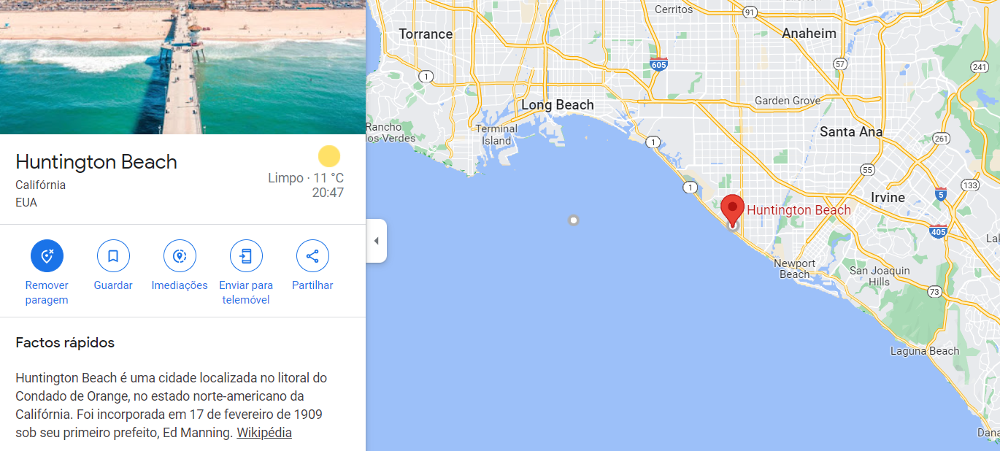

Our origins . . .

"Our goal is your happiness."
Bountiful Foods started 113 years ago, with an idea of the concept that we nowdays protect and are proud to stand for. Organic, juicy and naturally sweet fruits.
This concept started with Maria Caramugo de Faras. At the time Bountiful Foods as it is today did not exist, it was only a local family business based on a renovated farm house on the country side of the state of California.
With the years we were able to enlarge oue company and reach more places, people and many more smiles... and of course, always keeping our concept and taking our responsabilities to our beloved costumers at heart.
Thanks to this success and fast growing concept Bountiful Foods can now be found near multiple beaches along the coast on the South of the State of California, in a few spots in Hawai and in the Washington State near its capital.